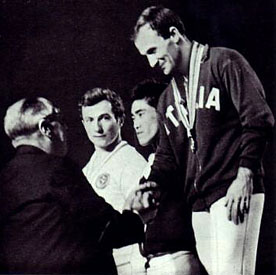

Viktor Lisitsky (USSR)
1964 Olympic AA Silver
Medalist
1965 and 1967 European R and V Champion
1967 and 1969 European HB Champion

Lisitsky (in white) shared the
1964 Olympic FX silver
with Yukio Endo of Japan. Menichelli (ITA) won the event.
Medal Total
Olympic Games: 5
Silver
World Championships: 2 Silver
European Championships: 6 Gold, 4 Silver
Viktor was born on October 18, 1939, in Magnitogorsk. He trained at the Army Club in Moscow, and took up art (drawing and painting) while still a gymnast. A graduate of the Moscow Regional Pedagogical Institute, he coached at CSKA after retiring from competitive gymnastics in 1971. Among his students were Vyacheslav Boiko and Stanislav Fogel. After six years, he left CSKA and took a job at the Institute of Chemical Technology Mendeleyev as the head of the physical education department. He worked there for many years, and became a judge. He continued to paint, and eventually became a respected painter, becoming a member of the Union of Russian Artists.
Competition Results
1958
USSR Championships: 6th HB
1960
Armed Forces Championship: 2nd AA, 1st V
Budapest International: 1st AA, 1st FX, 1st PH, 1st PB
RSFSR Cup: 3rd AA
USSR Championships: 2nd Team, 6th AA, 5th FX, 6th PH
1961
Armed Forces Spartakiade: 1st PH
JPN-USSR Dual Meet: 1st Team, 5th AA, 2nd PH, 2nd V
USSR Cup: 2nd FX, 5th R, 5th PB
1962
Friendly Armies Championship: 1st Team, 4th AA
USSR Championships: 3rd AA, 5th PB
USSR-JPN Dual Meet: 1st Team, 3rd V
USSR-YUG Dual Meet: 1st Team, 3rd AA, 1st V, 2nd HB
World Championships: 2nd Team, 13th AA
1963
ITA-USSR Dual Meet: 1st Team, 5th AA
RSFSR Championships: 1st AA, 1st V, 1st PB
USSR Championships: 3rd AA, 2nd PB, 3rd V, 4th HB, 5th FX, 5th R
USSR Cup: 4th AA, 1st HB, 2nd PB, 3rd FX, 4th V, 5th R
USSR Spartakiade: 2nd AA
1964
FRA-USSR Dual Meet: 1st Team, 1st AA
GDR-USSR Dual Meet: 1st Team, 1st AA
Olympic Games: 2nd Team, 2nd AA, 2nd FX, 2nd V, 4th HB, 5th
PB
USSR Championships: 1st AA
USSR Cup: 1st AA, 1st FX, 1st V, 2nd PB, 3rd PH, 4th R, 4th HB
1965
European Championships: 2nd AA, 1st PH, 1st R, 1st
V, 2nd FX, 2nd HB, 5th PB
USSR Championships: 1st FX, 1st R, 1st V, 2nd HB, 3rd PB
USSR Cup: 1st AA
1966
RSFSR Championships: 1st AA
USSR Championships: 1st AA, 1st PH, 1st V, 1st HB, 2nd R, 3rd FX, 3rd
PB
USSR Cup: 2nd AA
1967
European Championships: 2nd AA, 1st R, 1st V, 1st
HB, 4th PB, 6th PH
Pre-Olympics: 5th AA
RSFSR Spartakiad: 1st AA, 1st FX, 1st PH, 1st R, 1st V, 1st PB, 1st HB
USSR Spartakiad: 3rd AA, 1st FX, 1st HB, 2nd R, 2nd PB, 3rd PH
1968
Olympic Games: 2nd Team, 14th AA
USSR Championships: 4th AA, 1st R, 3rd PH, 3rd V, 3rd PB, 4th FX, 6th HB
USSR Cup: 3rd AA
1969
Army Spartakiade: 1st AA, 1st FX, 1st V, 1st PB, 1st HB, 3rd PH
European Championships: 8th AA, 1st HB, 2nd FX, 4th R,
5th V
RSFSR Championships: 1st AA, 1st FX, 1st HB
USSR Championships: 2nd AA, 1st FX, 1st HB, 2nd R, 3rd PH, 4th V, 4th PB
USSR Cup: 2nd AA, 1st FX, 2nd R, 3rd PH
1970
USSR Championships: 3rd AA
USSR Cup: 3rd AA, 1st FX, 2nd R, 3rd PB, 3rd HB
World Championships: 2nd Team, 12th AA, 6th R
This page was created on December
23, 2004 and was last updated on September 4, 2026.
© Gymn Forum